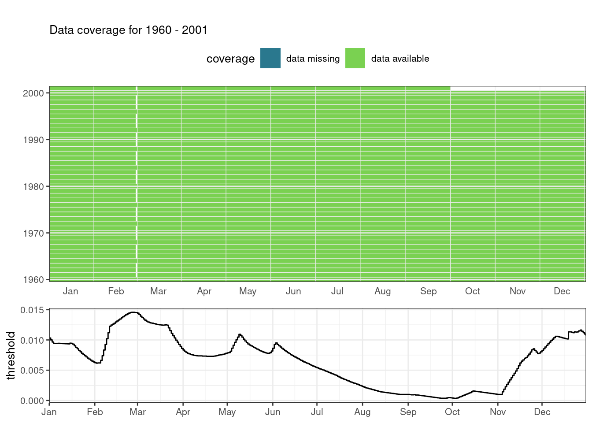
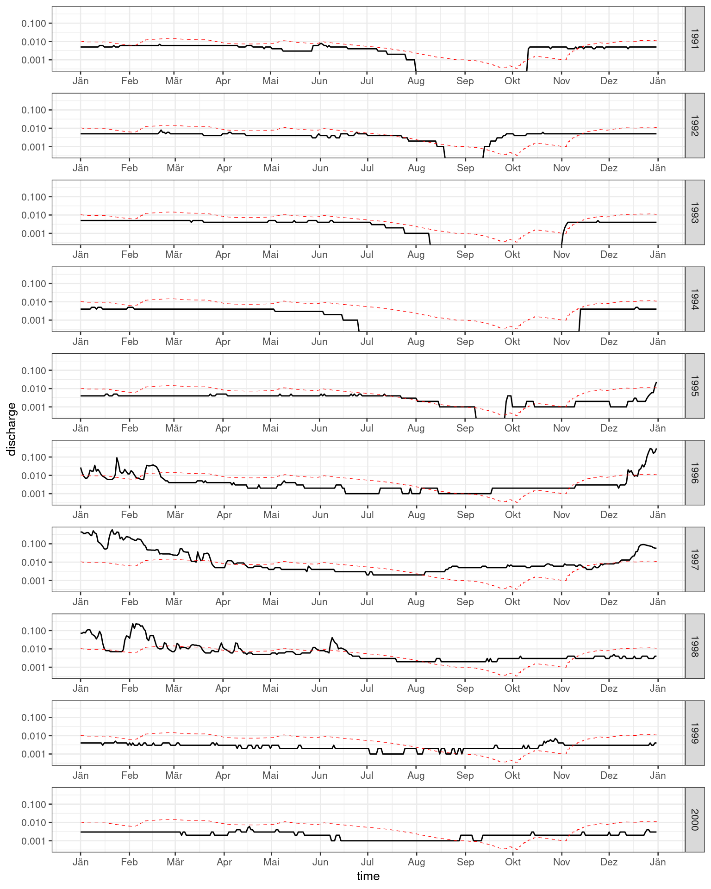

If we want to quantify the human influence on hydrological drought by comparing two time series, one with and one without this human influence, we want to use the threshold of the benchmark time series to calculate droughts in both the human-influenced and benchmark time series. These are the steps that we will discuss in this Worked Example:
Calculate the threshold from the benchmark time series
Calculate drought characteristics for the benchmark time series, using the benchmark threshold 1 Tobias: As you are always using the benchmark threshold I suggest to omit the last part of the sentence.
Calculate drought characteristics for the human-influenced time series, using the benchmark threshold
Compare drought characteristics between the benchmark & human-influenced time series
As an example we here use the Upper-Guadiana dataset with the two time series: the benchmark time series and the human-influenced time series.
library(tidyverse)
library(hydroDrought)
print(guadiana)## # A tibble: 15,249 x 3
## time Qsim Qobs
## <date> <dbl> <dbl>
## 1 1960-01-01 0.153 0.146
## 2 1960-01-02 0.148 0.146
## 3 1960-01-03 0.144 0.143
## 4 1960-01-04 0.14 0.154
## 5 1960-01-05 0.136 0.148
## 6 1960-01-06 0.133 0.154
## 7 1960-01-07 0.13 0.154
## 8 1960-01-08 0.128 0.148
## 9 1960-01-09 0.129 0.146
## 10 1960-01-10 0.139 0.133
## # … with 15,239 more rowsrange(guadiana$time)## [1] "1960-01-01" "2001-09-30"2 Tobias: To simplify the code, should we subset the included dataset to the period of 1960-2000? Data outside this period is not used, as far as I can see…
The benchmark time series comprises the uninfluenced, naturalized discharge \(Q_{sim}\). Note that benchmark time series can be calculated from a paired catchment analysis (Sect. XX), an upstream-downstream comparison (Sect. XX), model naturalisation (Sect. XX), or pre-post disturbance analysis (Sect. XX). The benchmark time series for this catchment are modeled as described in Sect. XX.
benchmark <- guadiana %>%
select(time, discharge = Qsim) %>%
mutate(
year = water_year(time)
) %>%
print()## # A tibble: 15,249 x 3
## time discharge year
## <date> <dbl> <dbl>
## 1 1960-01-01 0.153 1960
## 2 1960-01-02 0.148 1960
## 3 1960-01-03 0.144 1960
## 4 1960-01-04 0.14 1960
## 5 1960-01-05 0.136 1960
## 6 1960-01-06 0.133 1960
## 7 1960-01-07 0.13 1960
## 8 1960-01-08 0.128 1960
## 9 1960-01-09 0.129 1960
## 10 1960-01-10 0.139 1960
## # … with 15,239 more rowsThe human-influenced time series is basically the time series of observed discharge \(Q_{obs}\) from the Upper-Guadiana catchment.
influenced <- guadiana %>%
select(time, discharge = Qobs) %>%
mutate(
year = water_year(time)
) %>%print()## # A tibble: 15,249 x 3
## time discharge year
## <date> <dbl> <dbl>
## 1 1960-01-01 0.146 1960
## 2 1960-01-02 0.146 1960
## 3 1960-01-03 0.143 1960
## 4 1960-01-04 0.154 1960
## 5 1960-01-05 0.148 1960
## 6 1960-01-06 0.154 1960
## 7 1960-01-07 0.154 1960
## 8 1960-01-08 0.148 1960
## 9 1960-01-09 0.146 1960
## 10 1960-01-10 0.133 1960
## # … with 15,239 more rowsHere we are taking the benchmark time series. First we are smoothing the column discharge with a 30-day moving average. The threshold itself is calculated as a daily varying \(Q_{95}\) yielding a dataset with a row for each day of the year and the appropriate \(Q_{95}\) in the column named threshold.
threshold <- benchmark %>%
# applying a 30-day moving average smoother
mutate(discharge = moving_average(discharge, n = 30, sides = "center")) %>%
# the following line could be obsolete
filter(year >= 1960, year <= 2000) %>%
# computing the Q95 for each day of the year
var_threshold(vary.by = "day", fun = lfquantile, exc.freq = 0.95)
print(threshold)## # A tibble: 366 x 2
## day threshold
## <month-day> <dbl>
## 1 -01-01 0.0103
## 2 -01-02 0.0100
## 3 -01-03 0.00966
## 4 -01-04 0.00943
## 5 -01-05 0.00941
## 6 -01-06 0.00943
## 7 -01-07 0.00944
## 8 -01-08 0.00943
## 9 -01-09 0.00942
## 10 -01-10 0.0094
## # … with 356 more rows3 Tobias: These plots are just to show data coverage and the handling of leap-years. If you want to have some of them in the Worked Example should print the code producing them.

4 Tobias: I think this Worked Example could be easier to follow if we fist compute the drought events for both time series and in a separate section the drought characteristics. So section 2 could become “Drought Events”, Section 3 “Drought Characteristics”.
# initialize empty list for events
events <- list(benchmark = NULL, influenced = NULL)
# initialize empty list for final drought characteristics
drought.char <- list(benchmark = NULL, influenced = NULL)
# function that computes the drought characteristics given a table of events
summarize_dc <- function(x) {
c("mean.duration" = as.double(mean(x$duration)),
"mean.deficit" = mean(x$volume))
}Periods with discharges below the before calculated threshold are considered drought events. Consecutive drought events with an inter-event time of less than or equal to 10 days (argument min.duration = 10) get pooled into single drought event regardless of their inter-event excess volume (argument min.vol.ratio = Inf). To get rid of minor droughts, only drought events with a duration of more than 10 days are kept.
# calculate the drought events for the benchmark time series
events$benchmark <- benchmark %>%
filter(year >= 1981, year <= 2000) %>%
drought_events(
threshold = threshold,
pooling = "inter-event",
pooling.pars = list(min.duration = 10, min.vol.ratio = Inf)
) %>%
filter(duration > 10)
# calculate the drought characteristics for the benchmark time series
drought.char$benchmark <- summarize_dc(events$benchmark)For the Upper-Guadiana, these would be the drought events of the benchmark time series. Events numbers that are missing in the sequence are minor drought events that have been filtered out.
print(events$benchmark)## # A tibble: 17 x 9
## event first.day last.day duration dbt volume qmin tqmin pooled
## <int> <date> <date> <drtn> <drtn> <dbl> <dbl> <date> <dbl>
## 1 4 1981-10-18 1981-12-27 71 days 71 days 3.35e4 0 1981-11-23 0
## 2 5 1982-10-07 1982-10-18 12 days 12 days 1.17e3 0 1982-10-07 0
## 3 6 1983-06-03 1983-09-01 91 days 58 days 1.17e3 0.001 1983-08-12 8
## 4 7 1983-09-20 1983-11-20 62 days 62 days 7.87e3 0 1983-09-20 0
## 5 9 1985-11-12 1985-11-26 15 days 15 days 1.73e3 0.004 1985-11-12 0
## 6 11 1986-12-29 1987-01-08 11 days 3 days 5.49e1 0.009 1987-01-08 2
## 7 13 1991-08-21 1991-09-05 16 days 15 days 2.88e2 0 1991-09-03 1
## 8 15 1992-01-16 1992-02-19 35 days 32 days 7.94e3 0.005 1992-02-05 2
## 9 16 1992-05-12 1992-06-10 30 days 28 days 1.95e3 0.006 1992-05-27 2
## 10 19 1993-01-01 1993-05-11 131 days 129 days 5.55e4 0.003 1993-03-05 1
## 11 21 1993-09-19 1993-10-11 23 days 21 days 7.29e2 0 1993-09-19 1
## 12 22 1993-12-22 1994-01-04 14 days 14 days 1.82e3 0.008 1994-01-01 0
## 13 23 1994-03-20 1994-04-18 30 days 28 days 2.17e3 0.005 1994-04-13 2
## 14 24 1994-05-02 1994-10-16 168 days 162 days 2.87e4 0 1994-07-25 2
## 15 25 1994-11-25 1995-09-01 281 days 281 days 1.27e5 0 1995-06-06 0
## 16 26 1995-09-29 1995-11-16 49 days 49 days 6.58e3 0 1995-09-29 0
## 17 27 2000-02-29 2000-03-22 23 days 22 days 1.33e3 0.011 2000-03-18 1Extent the benchmark threshold calculated in step 1 to the period of the human-influenced time series. Note that this can be a different time period than was used to calculate the benchmark threshold (for example, for Upper-Guadiana, we are using the period 1981-2000).5 Tobias: this paragraph doesn’t make sense here. This is probably my fault but I think you don’t need it at all.
6 Tobias: These plots just explain why I used the Q95. With Q80 the droughts would not terminate within a year. Again: if you want to keep one or all of these plots we should show the code producing them.

# calculate the drought events for the human influenced time series
events$influenced <- influenced %>%
filter(year >= 1991 & year <= 2000) %>%
drought_events(threshold = threshold,
pooling = "inter-event",
pooling.pars = list(min.duration = 10, min.vol.ratio = Inf)) %>%
filter(duration > 10)
# calculate the drought characteristics for the human influenced time series
drought.char$influenced <- summarize_dc(events$influenced)For the Upper-Guadiana, these would be the drought characteristics:
drought.char## $benchmark
## mean.duration mean.deficit
## 62.47059 16427.09647
##
## $influenced
## mean.duration mean.deficit
## 161.8333 56151.0880Calculate the percentage difference between the benchmark and human-influenced drought characteristics.
\[\Delta DC = \frac{DCHI - DCBM}{DCBM} \cdot 100\] where \(\Delta DC\) is the percentage change in drought characteristics (\(DC\)) between the human-influenced (\(DCHI\)) and benchmark (\(DCBM\)) time series. For the Upper-Guadiana, these would be the differences in drought characteristics:
(drought.char$influenced - drought.char$benchmark) / drought.char$benchmark * 100## mean.duration mean.deficit
## 159.0552 241.8199